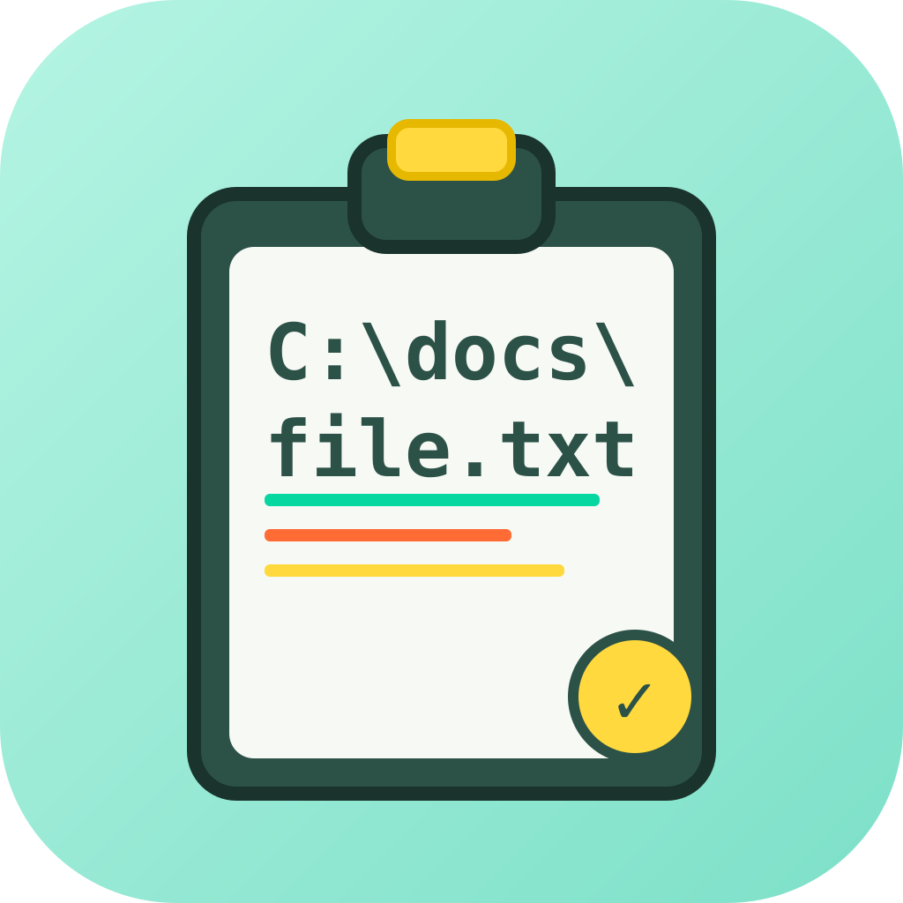
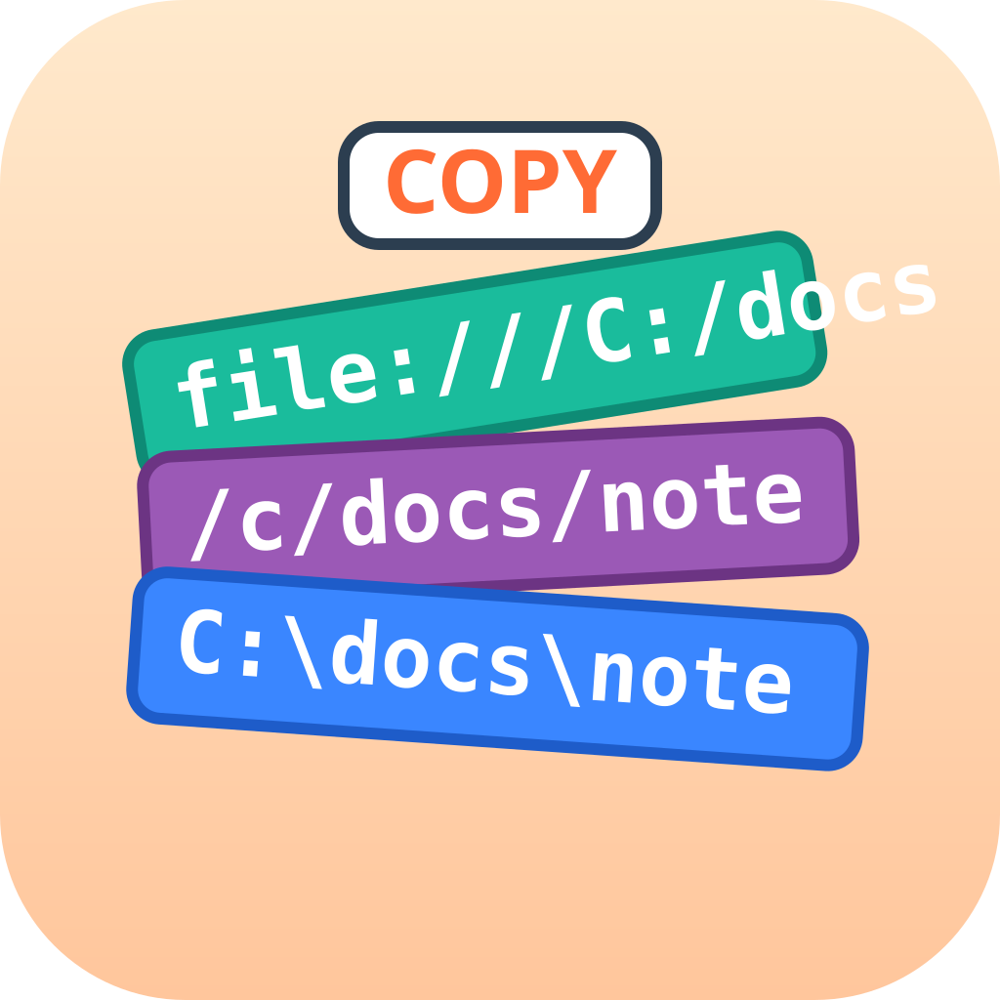
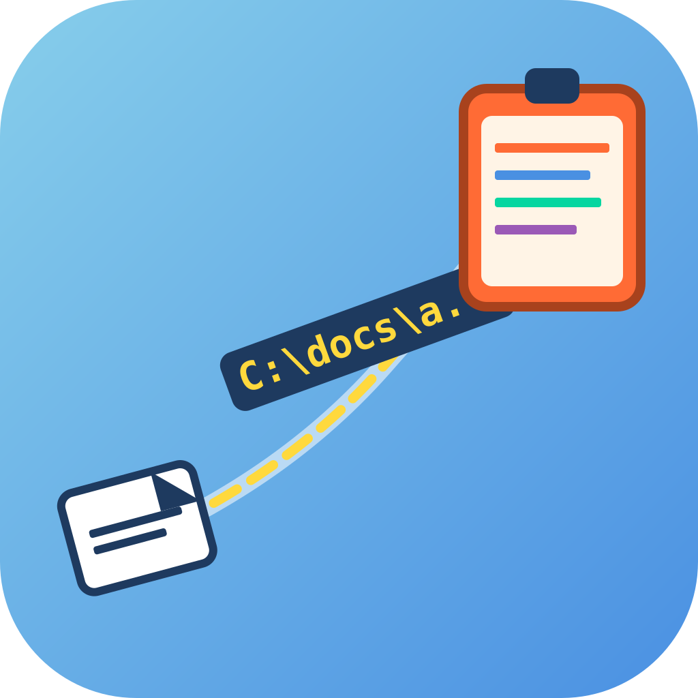
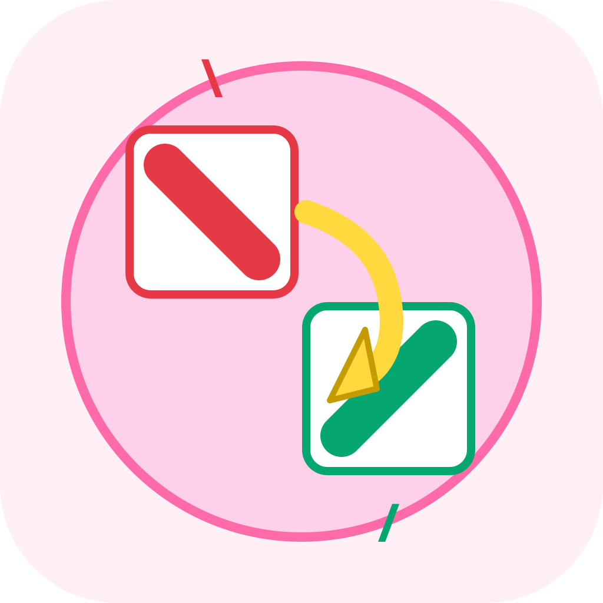
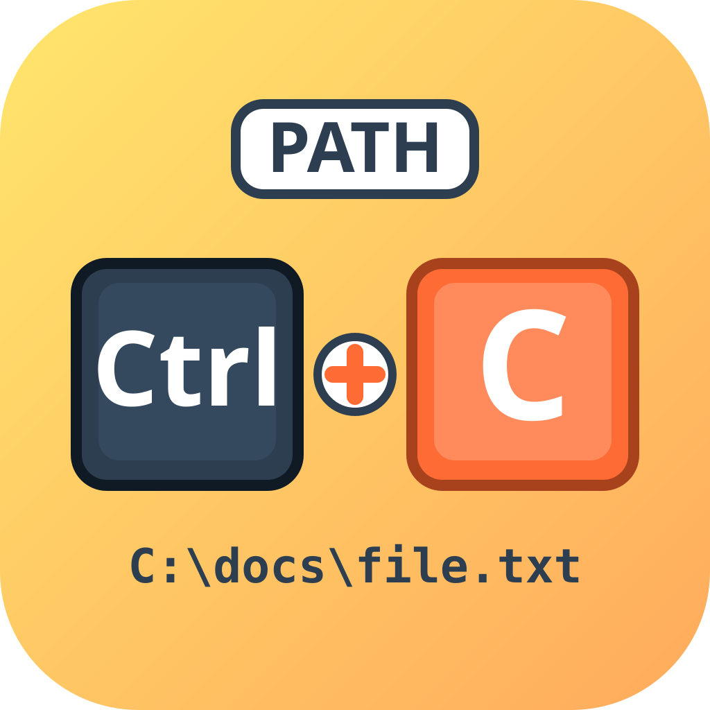
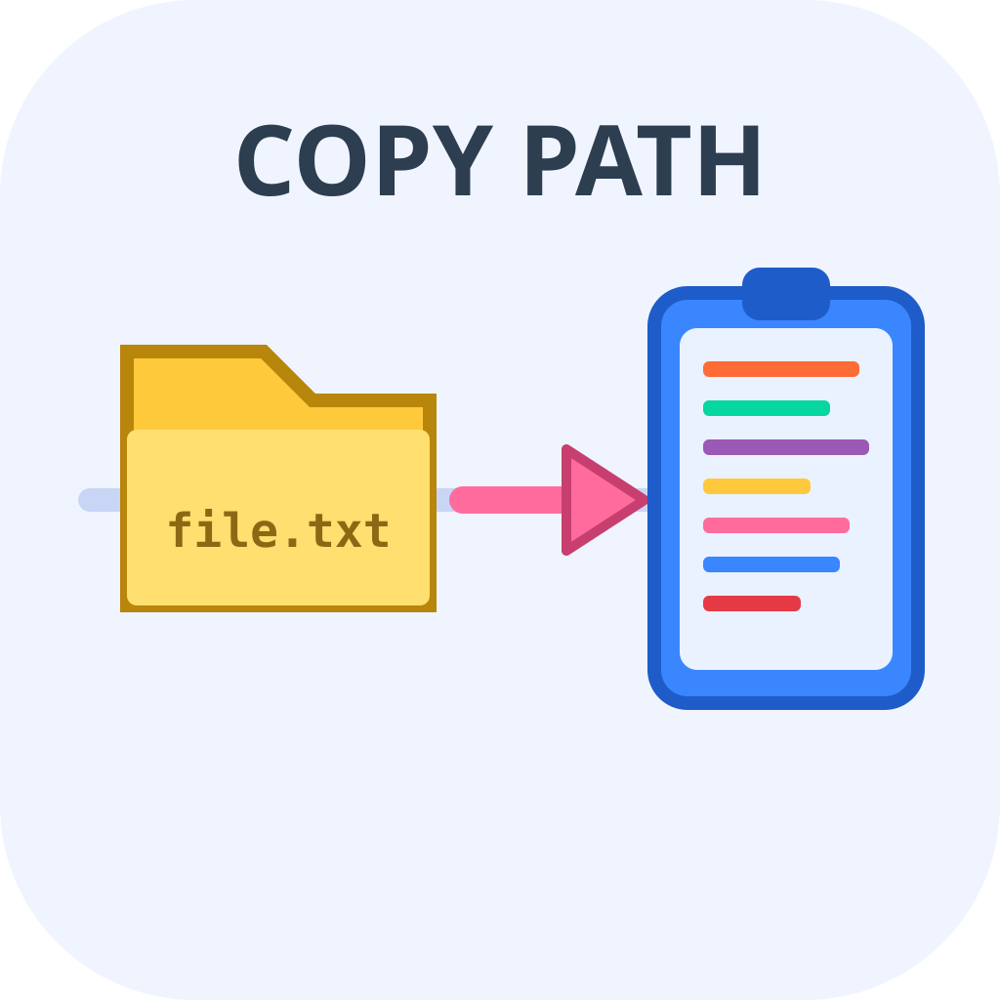
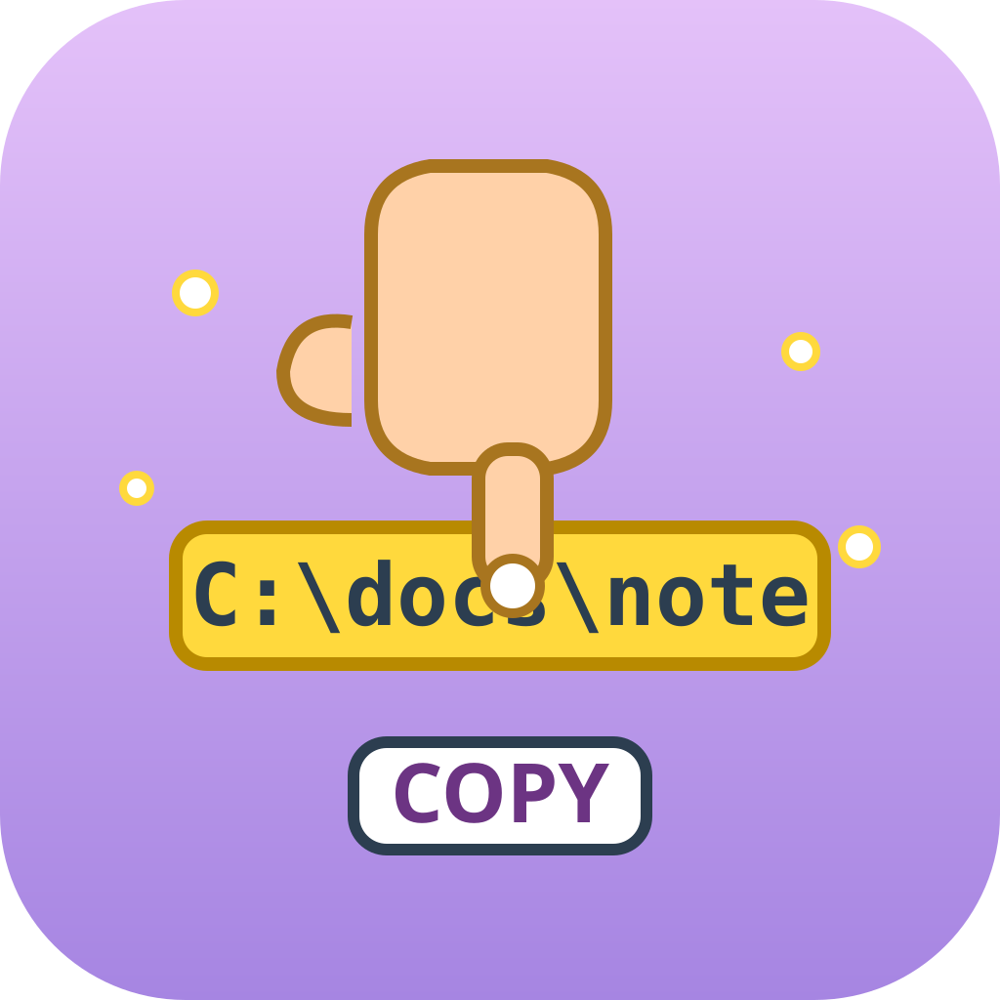
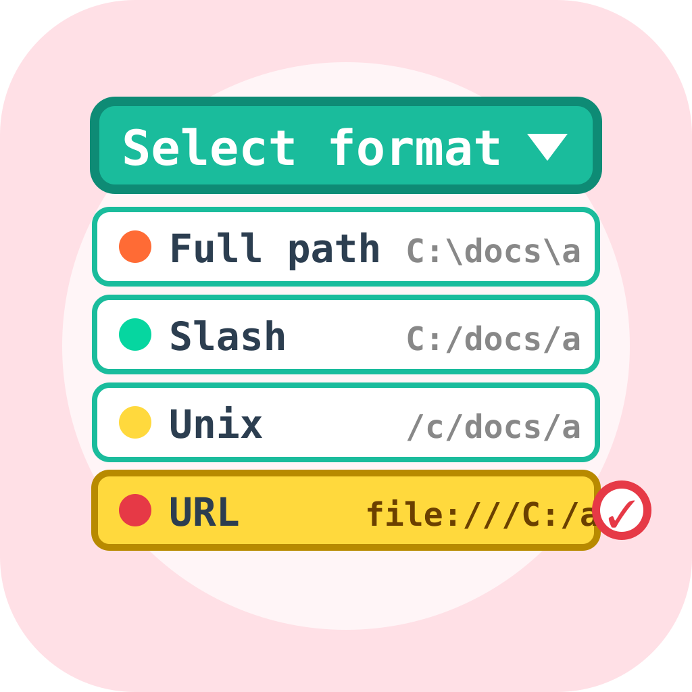

Copy.Path — Icon Candidates
파일 경로를 여러 포맷으로 복사하는 유틸 · 8개 후보

icon_01 · literal
클립보드 + 경로 텍스트 / 중앙심볼

icon_02 · literal
포맷 카드 스택 / 레이어드

icon_03 · metaphor
경로가 클립보드로 날아감 / 대각선

icon_04 · metaphor
백슬래시 ↔ 슬래시 변환 / 기하학

icon_05 · hybrid
Ctrl+C 키캡 + PATH / 중앙심볼

icon_06 · literal
폴더→클립보드 파이프라인 / 공간

icon_07 · metaphor
손가락이 경로 바를 집음 / 실루엣

icon_08 · metaphor
포맷 드롭다운 메뉴 / 레이어드